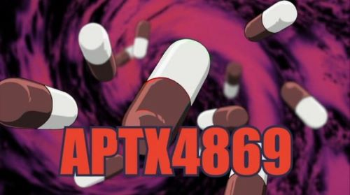
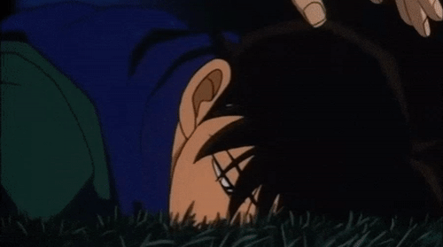
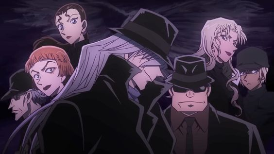
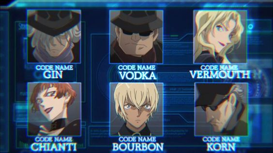

주요 소재
たった一つの真実見抜く見た目は子供、頭脳は大人。その名は、名探偵コナン！
단 하나의 진실을 꿰뚫는 겉 보기엔 어린이, 두뇌는 어른! 그 이름은 명탐정 코난!
1. APTX 4869


"나는 고등학생 탐정 남도일. 소꿉친구이면서 같은 반인 미란이와 놀이공원에 놀러갔다가
검은 양복을 입은 남자들의
수상한 거래 현장을 목격했다. 그 현장에 정신이 팔린 나는 뒤에서 다른 한패가
다가오는 것을 눈치채지 못했다.
그 남자는 나에게 수상한 약을 먹였고 정신을 차려보니 난 어린 아이로 변해있었다.
남도일이 살아있다는 사실을 그 녀석들을 알면 다시 내 목숨을 노릴 것이고 그러면 내 주변 사람들까지 위험해져,
브라운 박사 님의 조언을 들어 정체를 숨기기로 한 나는 이름이 뭐냐고 묻는 미란이의 질문에 코난이라고 대답했다.
난 그 녀석들의 정보를 모으기 위해 아빠가 탐정 사무소를 하고 있는 미란이의 집으로 들어갔다..."
(중략)
▶ 남도일의 몸을 초등학생으로 만들어버린, 코난 시리즈에서 매우 중요한 떡밥이자 작품의 상징과도 같은 아이템
2. 검은 조직


명탐정 코난에 등장하는 범죄 조직으로, 주인공 코난이 되기 전 남도일이 조사 중이던
거래 현장에서 APTX4869를
복용하여 초등학생으로 변한 후, 코난의 메인 스토리인 조직의 정체 해결과 본래의 모습으로 돌아가는
미션을 가진 악역 집단.
규모가 큰 조직인 만큼, 체계적인 시스템을 구축하고 있으며,
암살을 비롯해 폭탄 테러 등의
행위도 서슴치 않기에 이를 파헤치기 위해 조직에 숨은 스파이들도 있는 듯 한데...?
▶ 메인 악역 집단이자 코난의 최대의 숙적인 범죄 조직